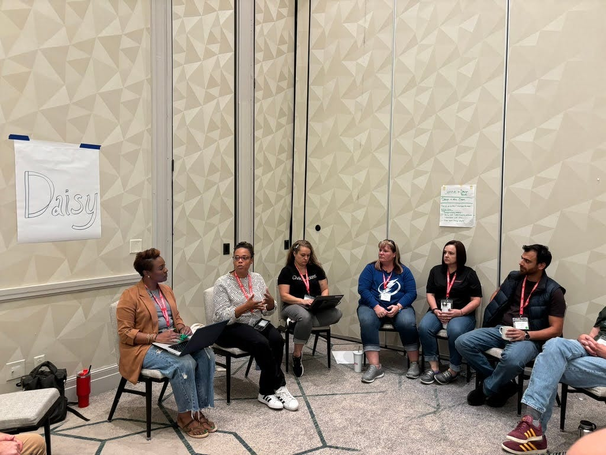
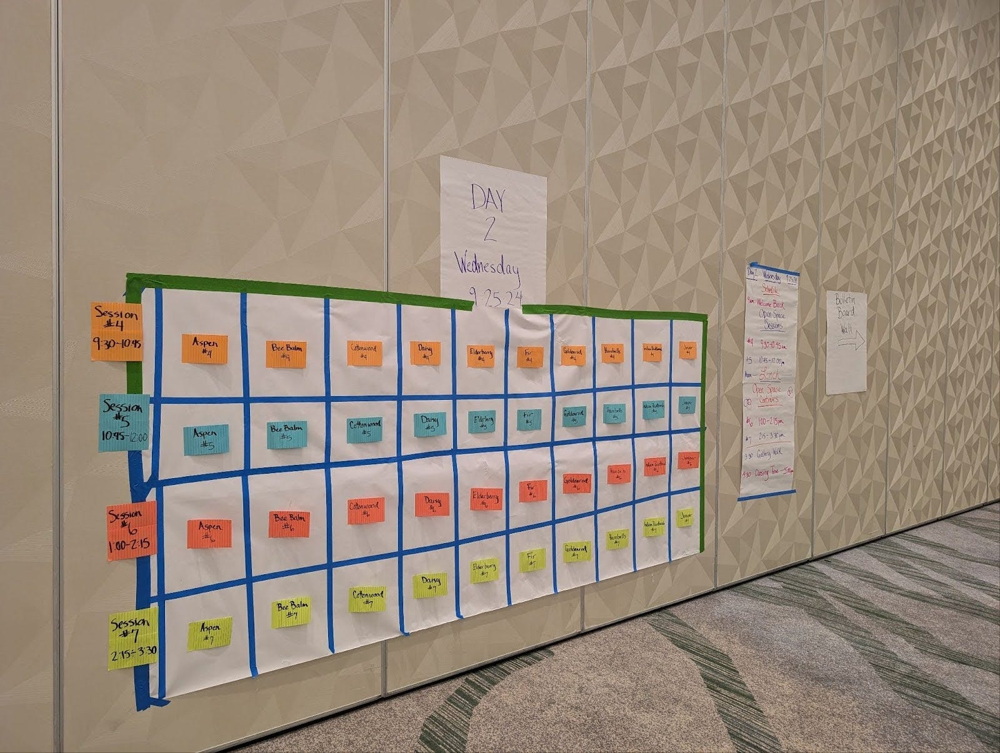
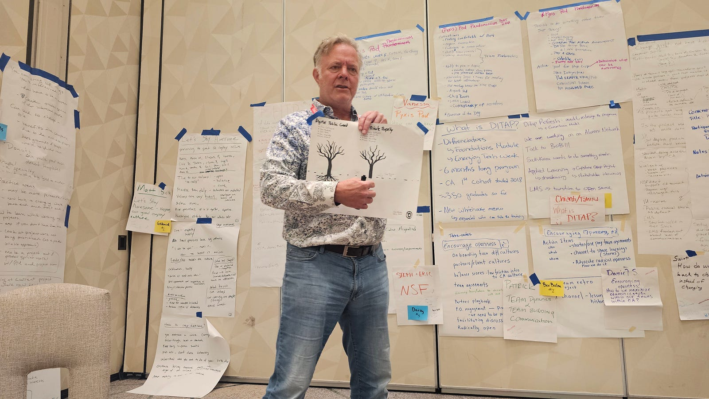
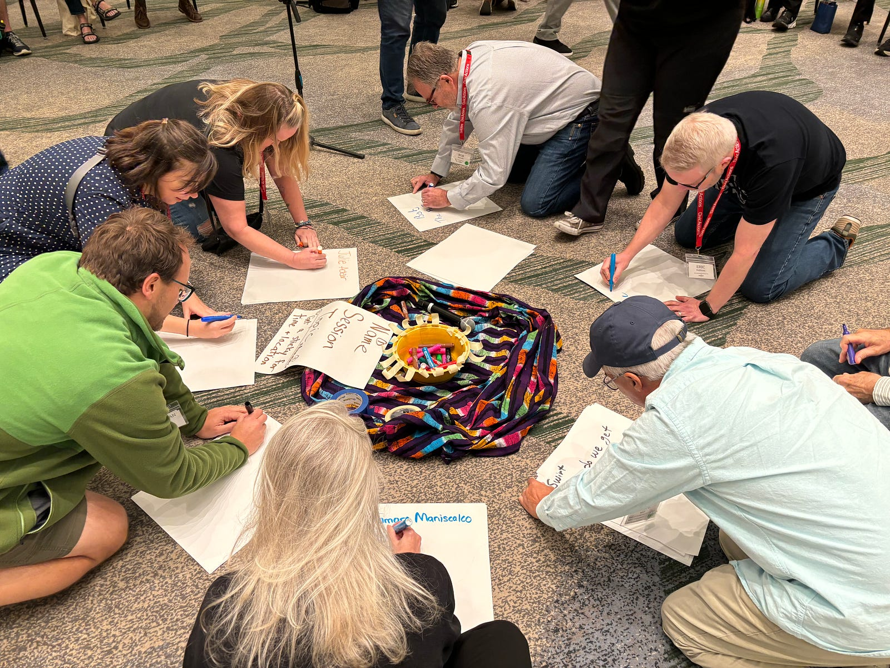
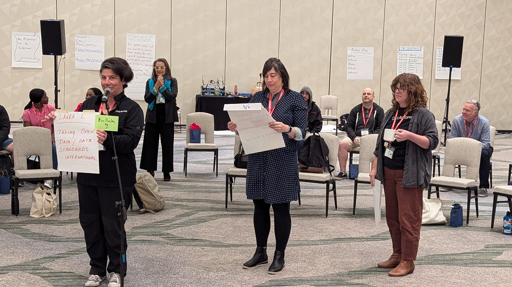
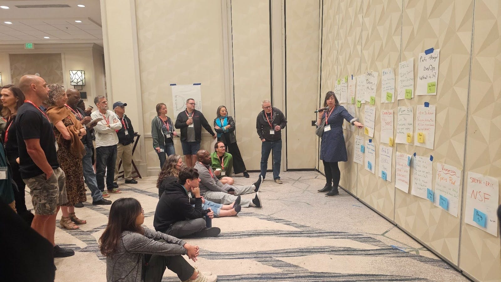

As a fully distributed company now in our 20th year, the act of bringing together over 100 team members for an in-person summit in Denver, Colorado last month was more than just about gathering — it was a celebration of two decades of innovation, mission-driven digital services, and most importantly, human connection.
One aspect of our summit that was particularly successful for driving meaningful conversation was using Open Space Technology, an approach to driving deeper conversations amongst our team members. With the help of expert facilitators from Three Stories Consulting, we created a milestone event that perfectly embodied our long-standing commitment to trust, openness, and collaboration.

A Milestone Moment
Since 2004, CivicActions has proven that a fully distributed team can deliver exceptional results while maintaining a strong, connected culture. In our milestone 20th year the challenge was clear: how do we create an in-person experience that honors the power of remote work while maximizing the unique value of face-to-face connection? We returned to our tradition of Open Spaces.

Understanding the Open Space Approach
Originated by Harrison Owen, Open Space Technology represents a fundamental shift in how groups convene and collaborate. The approach invites participants to take control of both the agenda and outcomes by “opening space” for individual creativity and power.
This framework provided the perfect way to make the most of precious in-person time, while also providing opportunities for cross-departmental collaboration and professional development.
“One of the reasons that I really enjoyed the open space format was because it allowed me to hear perspectives from colleagues that I don’t always get to work with on topics that I am interested in,” said Michael Kinnunen, Back End Engineer. “It was particularly interesting for me to hear different perspectives about professional development. Because of the open spaces and the conversations they brought forth, I’m hopeful that we’ll be able to continue discussing and implementing new ways at CivicActions for people to find the time and motivation to work on their own professional development goals.”

The Power of the Open Space Framework
The methodology aligned perfectly with both our remote-first DNA and several key summit objectives:
- Every issue of concern would be raised, provided someone took responsibility for doing so
- All issues would receive full discussion, to the extent desired
- All participants would have access to a complete report of issues and discussions
- Priorities would be set and action plans would be made
“Having Three Stories as facilitators allowed me and other members of the leadership team to be fully present and interact as members of the team and not people running the program content,” said Elizabeth Raley, Chief Operating Officer, highlighting how this approach enabled authentic participation for everyone.

Building a Unique Ecosystem
The process felt like an ecosystem where each team member took on one of three roles, perfectly symbolized as Butterflies, Bumblebees, and Beetles. Some of our team members embraced the Butterfly role, not attending formal sessions but instead sparking insightful, spontaneous conversations in the hallways. These “Butterflies” drew in others, offering fresh, unexpected perspectives that felt just as valuable as the planned discussions.
Others became Bumblebees, buzzing from session to session, cross-pollinating ideas. They followed the “law of two feet,” leaving sessions when they felt they’d given or gained enough, and moving to new groups. This movement created a flow of information, with Bumblebees bringing insights from one discussion to another, weaving connections we wouldn’t have made otherwise.
Finally, Beetles immersed themselves deeply in one topic, absorbing every detail. Their stability gave each session a steady, grounded presence, allowing conversations to unfold and deepen without interruption. This mix of Butterflies, Bumblebees, and Beetles meant that everyone contributed, in their way, to a well-rounded, meaningful experience.
Embracing the Unexpected
One of the core principles of Open Space is to “be prepared to be surprised.” During the 50+ organic sessions of Open Space, including topics ranging from “Telling Our Story” to “Digital Sustainability,” the summit demonstrated how an unconventional approach to in-person gatherings could yield extraordinary results. The format proved particularly effective in achieving several critical objectives:
Maximizing In-Person Value: The format ensured that face-to-face time was spent on activities that truly benefited from physical presence.
Democratic Participation: Building on our long-standing distributed leadership model, the approach enabled important topics to emerge from every parts of the organization.
Collaborative Vision-Building: As we look toward our next 20 years, the summit enabled authentic collective planning and problem-solving.

The success of Open Space Technology at our summit demonstrated its effectiveness, especially when a distributed group needs to maximize in-person time, foster innovation and productivity, and engage ongoing participation from multiple stakeholders. This approach thrived in situations where no one has all the answers, naturally reinforcing our organizational values of openness and transparency. It helped break down traditional hierarchical barriers, allowed for the emergence of unexpected insights and connections, and created shared ownership of outcomes, all while strengthening team relationships across physical distances.

Looking ahead, as organizations continue to navigate the balance between remote and in-person collaboration, our experience offers valuable insights that when teams are empowered to shape their own experience, the results can exceed traditional top-down approaches.
Open Space Technology’s ability to tackle complex problems quickly while generating creative solutions was fully realized, offering a more democratic and open alternative to more hierarchical gatherings and ultimately empowering team members to lead, reflect, and connect.
Interested in learning more about our distributed team? Visit CivicActions.com/careers